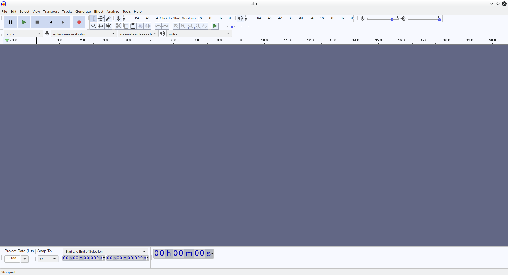
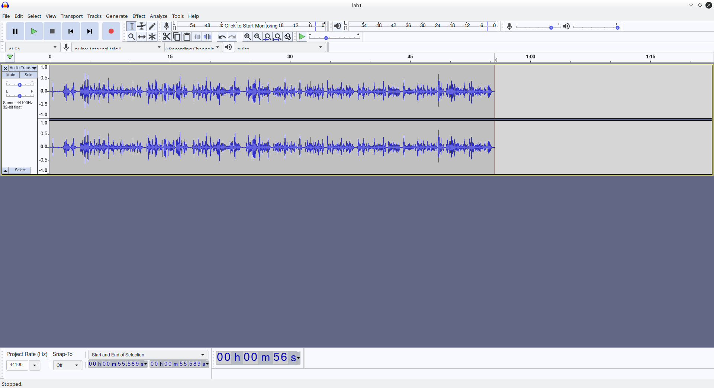
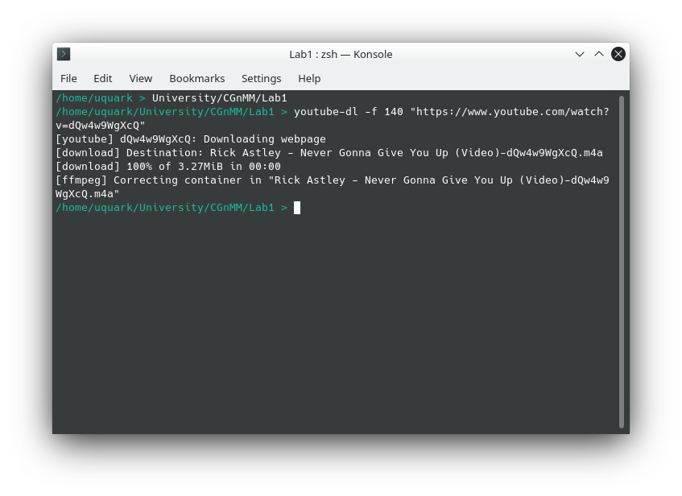
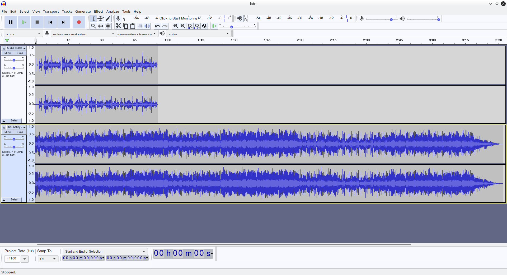
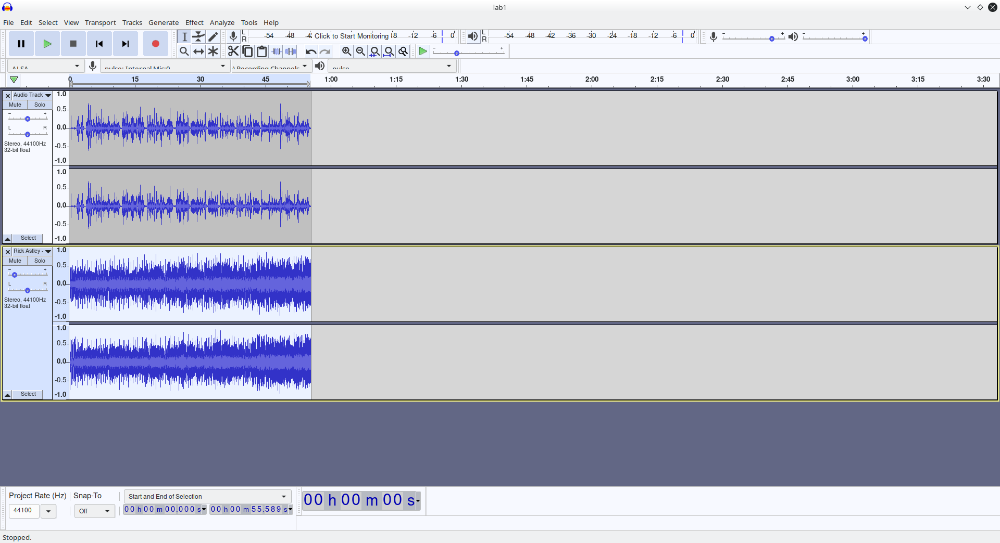
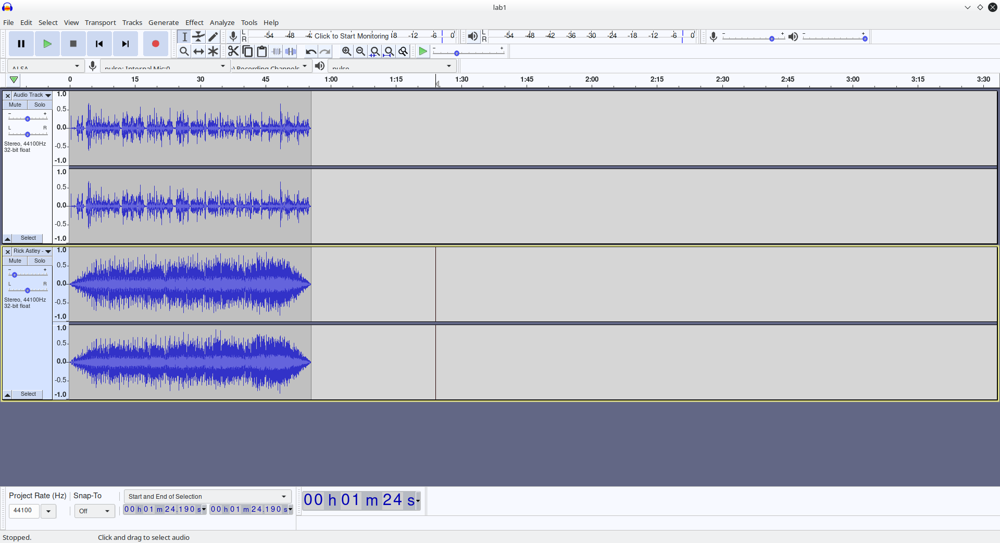
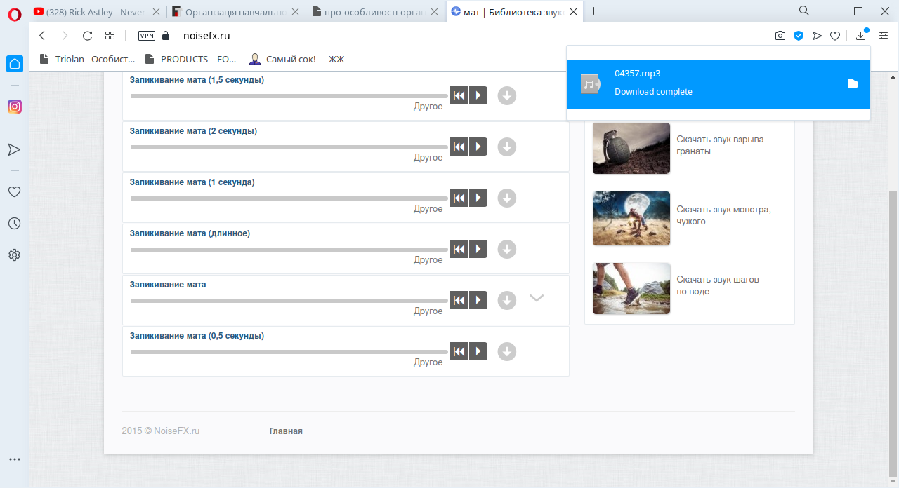
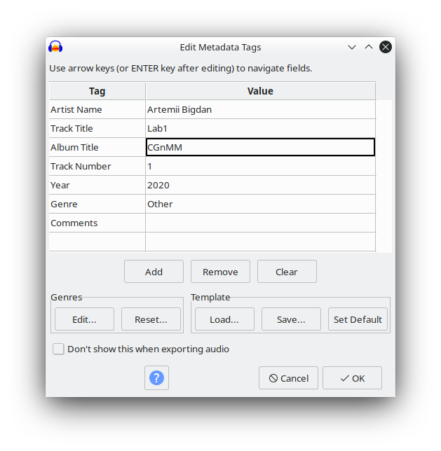

Створюємо проект в Audacity

Записуємо свій чарівний голос

Завантажуємо музичний супровід

Додаємо супровід до проекту

Обрізаємо супровід до довжини голосу

Додаємо Fade-In та Fade-Out

Завантажуємо звуковий ефект, щоб замаскувати погане слово

Експортуємо файл із вказанням метаданих
Результат